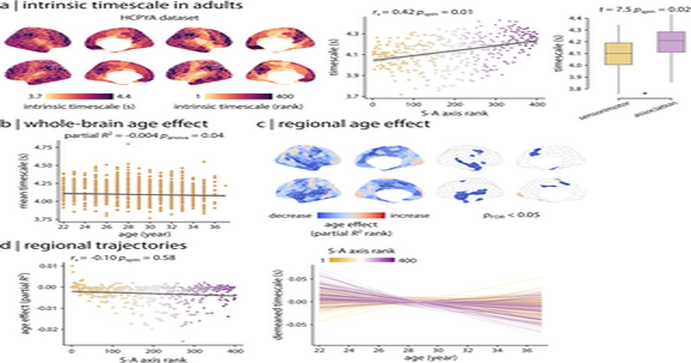

Внутренняя шкала времени развивается иерархически от сенсомоторной до ассоциативной коры в молодости и стабилизируется во взрослом возрасте
golia Shafiei, Joëlle Bagautdinova, Valerie J.
Sydnor, Dani S.
Bassett, Deanna M.
Barch, Matthew Cieslak, Yong Fan, Elizabeth Flook, Alexandre R.
Franco, Gregory Kiar, Audrey C.
Luo, Michael P.
Milham, Linden Parkes, Taylor Salo, Leah H.
Somerville, Tien T.
Tong, Russell T.
Shinohara, Theodore D.
Satterthwaite Intrinsic timecale is a common used measure of spontaneous neural dynamics that quantifies the temporal window of processing of neur